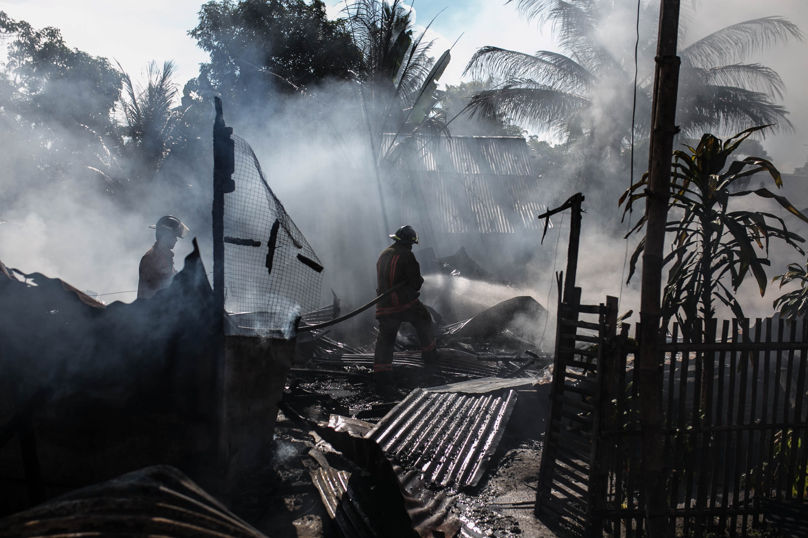
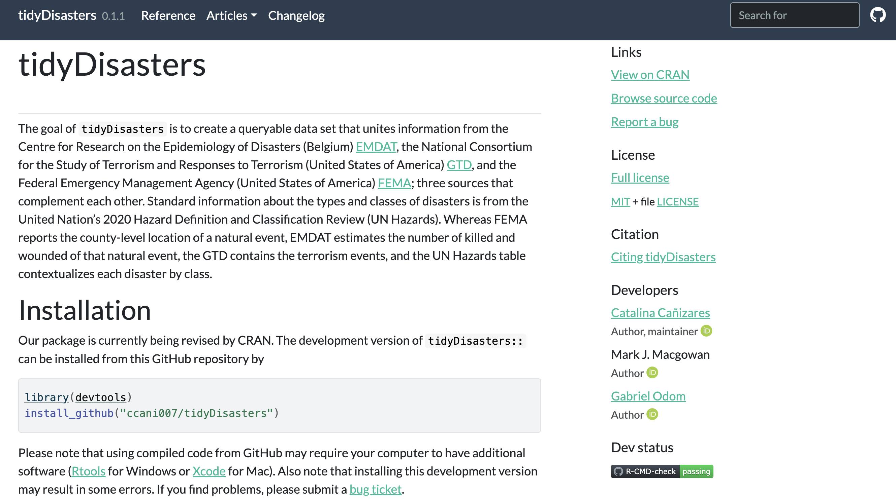
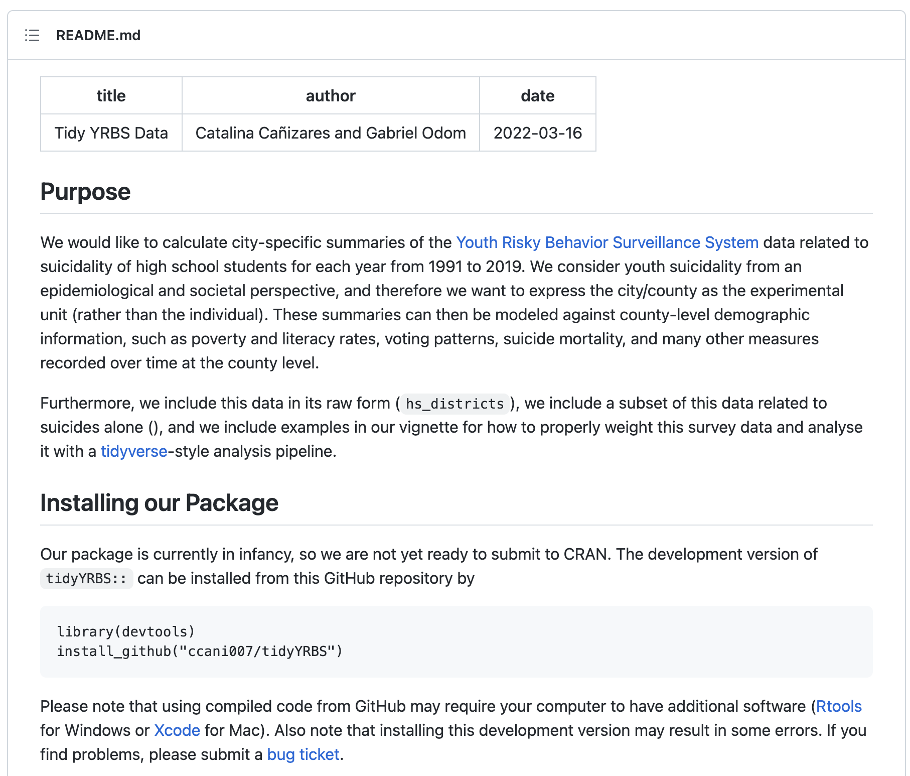

Current Projects
Understanding Negative Affect in Adults
Currently I am working in a publication that aims to examine the extent to which cognitive schemas, attributional style, experiences of child adversity, and lifestyle factors such as alcohol, drug use, and physical activity are risk factors can accurately predict Negative Affect in a sample of both depressed and non-depressed adults in Colombia 🇨🇴 using regression trees.

The Impact of Mass Casualty Events on Adolescent Suicidality

This project seeks to address the inconsistent research findings surrounding the correlation between mass casualties and suicide morbidity. Our goal is to contribute to the existing literature on the mental health effects of natural disasters, specifically by investigating whether mass casualty events increase a young person’s susceptibility to suicidal ideation and planning. To achieve this objective, we will examine the relationship between mass casualty events reported across the United States 🇺🇸 from 1990 to 2019 and data from the Youth Risk Behavior Survey (YRBS) collected during the same time frame, with a focus on school districts.
tidyDisasters
This project is a sub-project of The Impact of Mass Casualty Events on Adolescent Suicidality, and aims to merge three different datasets - Emergency Events Database (EM-DAT), Global Terrorism Database (GTD), and Federal Emergency Management Agency (FEMA) - into a set of relational databases in the fifth normal form. The merging process is based on data equivalence criteria, and the creation of this R Package takes into account the lack of consistency between the three datasets in determining the reported event type.

tidyYRBS

This project is a sub-project of The Impact of Mass Casualty Events on Adolescent Suicidality and its goal is to create a comprehensive R package containing the YRBS data for streamlined analysis. While the CDC website allows downloading of the data, the process can be lengthy, particularly when using the SPSS route. With this package, all the data will be conveniently located in one place and organized in a fifth normal form. Additionally, useful functions will be developed to allow for efficient interaction with the data. As the project is still under construction, it is currently only available through my  repository.
repository.
Dissertation - Comparing Supervised Machine Learning Classification Methods to Identify Risk Factors for Suicide Morbidity Among USA High School Students

As of December 2022, my research proposal on adolescent suicide morbidity has been approved, and I am currently focused on building the code to analyze the data. My research aims are:
Identify critical risk factors for adolescent suicide morbidity from a set of 99 risk behavior predictors, using machine learning classification algorithms.
Identify the best machine learning methodology for classifying adolescents who have attempted and considered suicide, based on performance measures such as the Receiver Operating Characteristic Curve, overall accuracy, and the Kappa value.
Compare the performance of an a priori-determined model with models informed by feature selection from LASSO (least absolute shrinkage and selection operator method).
Investigate whether there are differences in the critical risk factors for suicide ideation and suicide attempts.
I am using tidymodels to build the code for this analysis, and I am excited to share my findings once the study is complete.
You can view the slides to my research proposal by clicking here! 👀